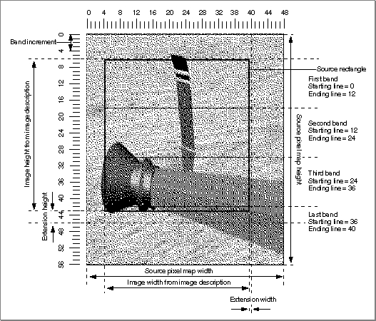

Banding and Extending Images
Occasionally a compressor component may not be able to accommodate the destination rectangle for an image decompression or the source for an image-compression operation. This situation may result from compressors that are optimized to work at certain depths or that cannot perform scaling, translation, dithering, or masking during decompression. In such circumstances the Image Compression Manager allocates a temporary buffer that is acceptable to the compressor component and breaks the image up to fit into that new buffer. Since there often is not enough memory to allocate a buffer to hold the
entire image, the Image Compression Manager may allocate one that holds a band of the image. A band is one horizontal piece of the image. Its height is some portion of the desired image height (before scaling or rotation), and it is at least as wide as the desired image.The height of the band is determined both by the amount of memory available and the block size of the compressor component. The block size of a compressor is the natural size at which it handles images, and it is peculiar to the image-compression algorithm. The block size for the photo compressor is usually 16 pixels by 16 pixels, for example. Usually the block width and height are equal, but this is not always the case. The minimum height of a band is one strip of blocks. A strip is defined to be a part of an image that is as high as the block height (for the compressor in question) and as wide as the band. The width of a band is either the width of the desired unscaled image, or that width increased by an extension.
Figure 3-9 shows the measurements of several image bands.
Figure 3-9 Image bands and their measurements

Some compressors can only handle images with dimensions that are a multiple of their block size. If the desired image does not comply with this restriction in either dimension, the Image Compression Manager extends the band on the right side and bottom by the amount required to meet the needs of the compressor. During compression, the compressor fills the extended region with the same pixel value as the pixels adjacent to the extension. During decompression, the Image Compression Manager writes only the pixels that are part of the source image. The extended portion remains only in the offscreen buffer.